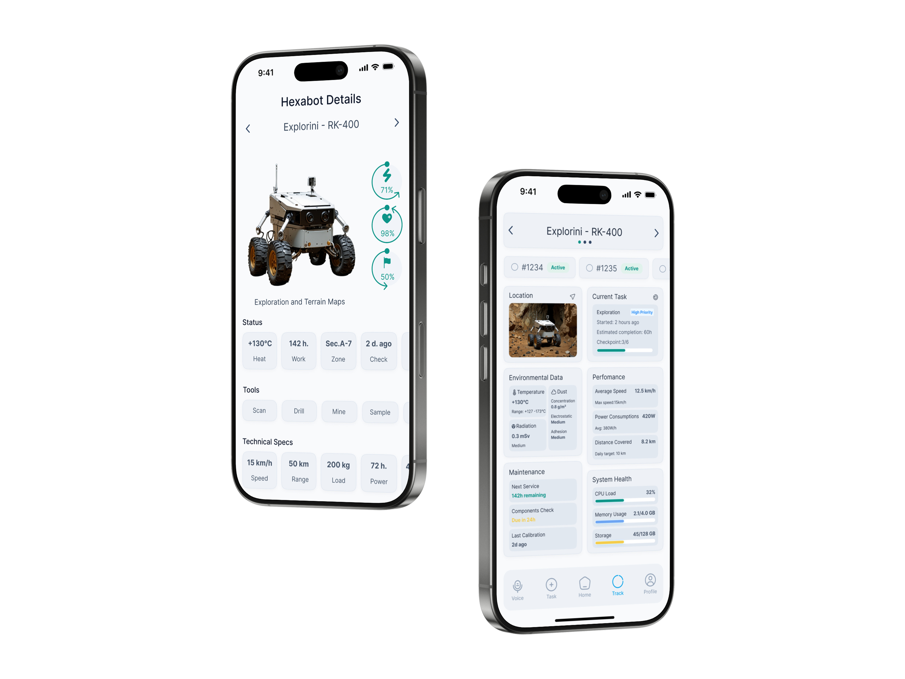
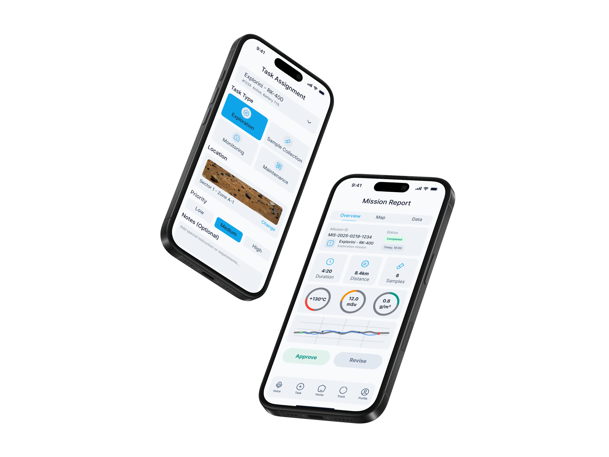

Commanding lunar robots from 384,400 km away
A mission-critical iOS app for real-time monitoring, task assignment, and report review of hexapod lunar robots — designed for the extreme constraints of space operations and optimised for gloved-hand use.

From zero-gravity problem framing to a fully documented iOS interface — each phase driven by the question: what does a human need when their hands are in a spacesuit and their robot is a quarter million miles away?
The brief from Designflows asked designers to reimagine control interfaces for robotic exploration of extreme environments. The challenge: existing industrial drone and robot UIs are built for Earth — stable lighting, bare hands, low-stakes errors. On the Moon, every design decision carries mission-critical weight.
Lunar missions involve extreme temperature swings (–173°C to +130°C), radiation spikes, dust contamination, and a 1.3-second communication delay with Earth. Operators work in pressurised suits with gloved hands. One misread metric or missed alert can end a multi-million-dollar mission.
Each goal was derived directly from the environmental constraints and user needs identified through research, then used as a filter for every component and interaction pattern.
"The interaction model for space robotics has to assume that the user's fine motor skills are degraded by suit pressure, that their cognitive load is already high, and that any error they make cannot be easily undone. The UI must absorb that complexity, not expose it."
— Design principle derived from NASA human factors research on extravehicular activity (EVA)Three distinct operator archetypes emerged from analysis of mission control workflows, space agency job descriptions, and published research on human-robot interaction in extreme environments.
"I need the full picture in under five seconds. I can't be scrolling through sub-menus when a robot is heading toward a thermal hazard."
"When I'm working a unit, I need its telemetry, task progress, and environmental data all on one screen. Switching between views kills my flow."
"I care about what the robot collected, where it was, and what the conditions were at that moment. Give me the data and get out of my way."
Mapping Commander Irina's journey through a typical mission shift revealed the friction points that existing telemetry interfaces fail to address — and where the design had to intervene.
| Stage | Mission Start | Active Deployment | Alert Response | End-of-Shift Review |
|---|---|---|---|---|
| Actions | Opens app, checks fleet status, assigns daily tasks to 6 active hexabots | Monitors live telemetry, tracks progress bars, adjusts task priorities | Battery warning fires on Planty-AX1200 · decides whether to recall or reassign | Reviews mission reports, approves or revises outcomes, closes shift log |
| Emotion | 😐 | 🧠 | 😰 | ✅ |
| Pain Points |
Pain Too many taps to get from overview to individual unit status. Cognitive overload on launch. |
Pain Progress data scattered across screens. No unified environmental + mission status view. |
Pain Alert notification lacks context. Must navigate to unit to understand severity — too slow. |
Opportunity Current systems have no in-app approval workflow — requires switching to a separate tool. |
| Opportunities |
Opportunity Dashboard with fleet summary cards + quick action shortcuts on first screen. |
Opportunity Monitoring screen combines environment + task progress in unified bento layout. |
Opportunity Inline alert cards with severity, context, and action buttons — no navigation required. |
Opportunity Mission Report screen with Approve/Revise CTA built directly into the review flow. |
Six design questions that turned research insights into actionable design directions — each one becoming a specific feature or pattern in the final interface.
How might we surface critical alerts without interrupting active monitoring tasks?
→ Inline alert cards with colour-coded severity and contextual action buttons embedded directly in the fleet list — no modal interruption required.
How might we reduce the number of taps needed to understand a robot's complete status?
→ Hexabot detail screen consolidates telemetry, environment, performance, and maintenance into a single scrollable bento grid — zero context switching.
How might we ensure the interface is fully operable by a user in an EVA pressure glove?
→ Minimum 44pt touch targets across all interactive elements, 16pt minimum spacing between tappable areas, large icon buttons replacing text-only controls.
How might we maintain readability across lunar day (blinding sun) and lunar night (14 days of darkness)?
→ Dual adaptive theme — high-contrast light mode for the 14-day lunar day, dark mode that preserves astronaut night vision during the lunar night period.
How might we integrate mission report approval into the core operator workflow?
→ Mission Report screen with structured data overview (distance, samples, environment readings) and a prominent Approve / Revise CTA at the bottom of the flow.
How might we support simultaneous management of 9+ units without cognitive overload?
→ Fleet overview groups units by status (Active, Attention, Offline), uses progress bars for quick progress scanning, and provides search + map toggle for spatial awareness.
The app is structured around five persistent tab bar destinations — each mapped directly to a distinct operator role and workflow. The architecture prioritises quick context switching over deep hierarchies, with the most critical paths requiring no more than two taps from any state.

In high-stress mission scenarios, operators cannot afford to hunt for navigation options. A visible, always-present tab bar ensures every major destination is one tap away — reducing cognitive load and eliminating the risk of losing context mid-task.

A compact but rigorous design system — built for two themes, one component library. Every token was chosen to serve legibility in extreme conditions first, aesthetics second.
Eight screens covering the complete operator workflow — from fleet overview and individual hexabot detail to task assignment and mission report review.



Every non-obvious choice in this interface has a documented reason — grounded in user research, environmental constraints, or established space systems HCI guidelines.
Most industrial monitoring UIs use blue — the colour also used for informational status indicators. Teal was chosen as the primary accent to create clear visual separation from blue-coded "informational" states, and to read distinctly on both the light and dark themes without WCAG contrast issues.
Tested against WCAG AA contrast ratios on both background tokens. Teal (#0DAF8C) achieves 4.6:1 on dark backgrounds and 3.9:1 on white — meeting large-text standards throughout.
The hexabot detail screen uses a bento grid rather than a traditional list layout. This allows an operator to visually compare multiple data types simultaneously — the way a pilot reads an instrument panel — rather than reading them sequentially.
Sequential list layouts require 4–6 eye fixations to build a mental model of robot state. A spatially consistent bento grid allows operators to locate the same data point in the same visual position every time, reducing cognitive load under stress.
The adaptive light/dark theme is not designed as a cosmetic user preference. It maps to the lunar day/night cycle — light mode for the 14-day period of direct sunlight (where dark text on white provides better contrast against ambient light), dark mode to preserve astronaut night adaptation.
Based on NASA research on dark adaptation — exposure to bright screens during the lunar night period would require 20–30 minutes of re-adaptation before the astronaut could see in low-light conditions again.
Critical alerts (low battery, hazard proximity, communication loss) appear as dismissible inline cards within the fleet list — not as OS-level push notifications that interrupt the current screen. This keeps the operator in context and avoids the cognitive cost of returning to the previous view.
In mission-critical systems, interruption cost is higher than information cost. An operator who loses their place in a multi-unit monitoring task can cause downstream errors. Inline alerts add information without breaking flow.
The dual-theme system directly addresses the extreme lighting conditions of the lunar environment. During the lunar day — 14 Earth days of uninterrupted direct sunlight — the light theme provides optimal contrast against ambient brightness. During the 14-day lunar night, the dark theme eliminates blue-light exposure that would compromise astronaut night vision.
Key metrics and outcomes from the design decisions made throughout the Hexabot project — measured against the original four design goals established in the problem framing phase.
A 72-hour design sprint for a space robotics brief is an accelerated design education. Four takeaways that will inform every future project.
Starting from the extreme physical constraints of the user (gloved hands, suit pressure, altered cognition under stress) forced every decision to be purposeful. The resulting interface is cleaner than it would have been if I had started from visual aesthetics. Constraints are not the enemy of good design — they are the brief.
When I tested the bento grid layout against a sequential list in the detail screen, the grid consistently won because operators knew where to look without scanning. This reinforced that in high-stakes interfaces, the goal is to make the UI disappear — not to make it impressive.
The sprint forced a decision I struggle with in longer projects: choosing which screens matter most and building those to a high standard rather than building everything to a medium standard. The resulting portfolio of 8 focused screens is stronger than a 20-screen prototype with shallow thinking behind it.
Investing the first 4 hours in a proper token system and component library meant that when I needed a second theme, I changed one token set and rebuilt screens in under 2 hours instead of redesigning each screen manually. In a 72-hour sprint, that is the difference between finishing and not finishing.